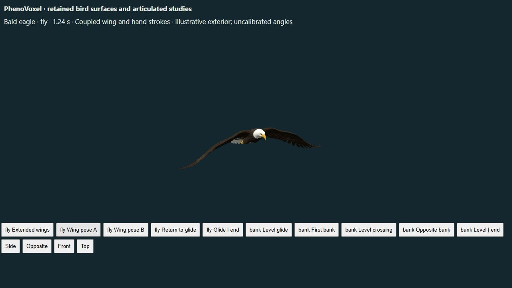
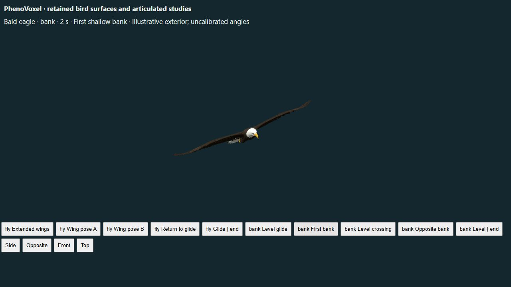
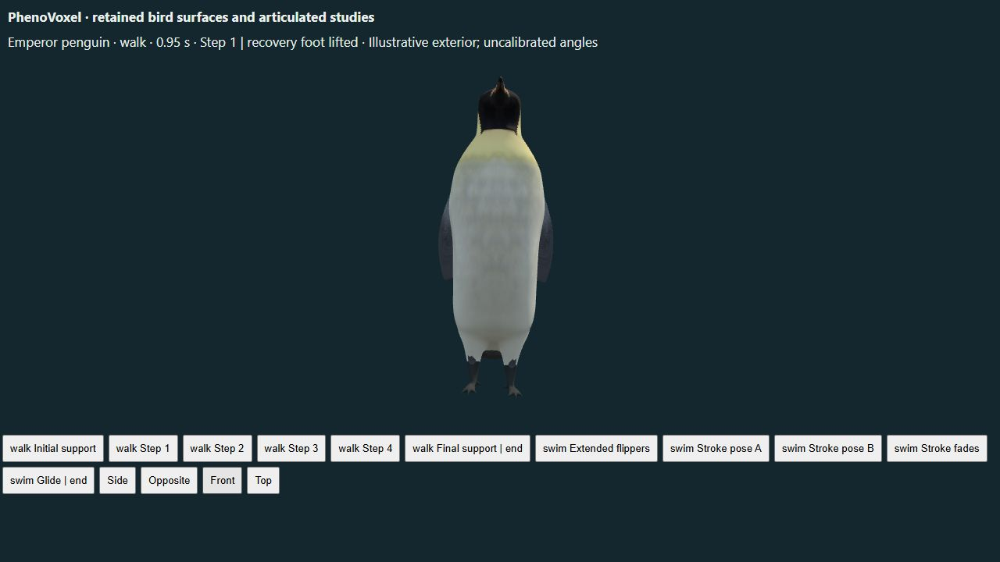

Bald eagle | Emperor penguin | Standing head turns and earlier work
Eagle flapping and banking, and emperor penguin walking and swimming now stop at their eight-second endpoint. Each study has selectable poses, pause, reverse seeking and replay. The original skeleton trajectories, morph targets, geometry and texture maps are retained. Held standing, resting and gliding postures remain separate from moving sequences.
The eagle uses coordinated arm/hand wing motion, tucked legs and a shallow banking sequence. Penguin walking uses four alternating steps with fixed stance support; swimming uses paired flippers and trailing feet before settling into a glide.
Bergen et al. (2022) distinguish bald-eagle flight states using telemetry. These categories support behavior names, not our joint angles. Sato et al. (2010) report a mean dominant stroke frequency of 1.47 Hz in nine free-ranging emperor penguins. That dataset informs the active cycle only. van Dam et al. (2002) report intermittent stroking and gliding. Our amplitudes, eight-second sequence and transitions are authored. Griffin and Kram (2000) provide walking mechanics context, but contact forces and energy are not reproduced.
No aerodynamic, hydrodynamic, physiological or independent biological validation is implied. All existing partial and unavailable capability labels are preserved; 186 unavailable processes remain across all kingdoms.
The penguin swimming morph still has an unnatural shoulder contour, visible in the retained surface below. This release corrects playback; it does not certify that contour as anatomically accurate. A separate rig/morph correction remains necessary.


